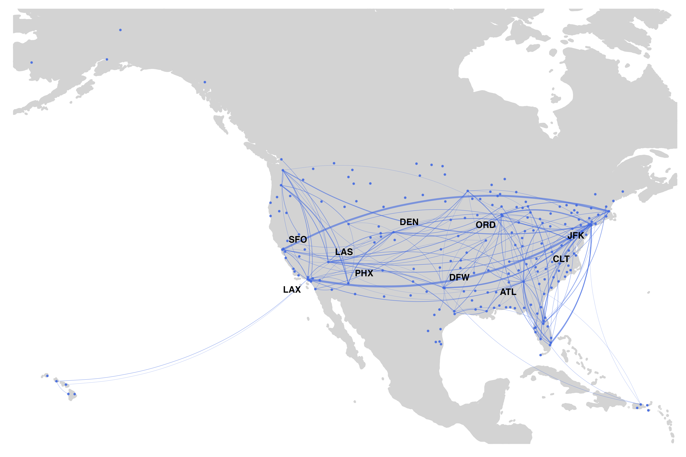

SKYNET is a flexible R package that allows generating bespoke air transport statistics for urban studies based on publicly available data from the Bureau of Transport Statistics (BTS) in the United States.
SKYNET is effectively divided into four segments:
To import data, simply type import_db1b() or import_t100() including the path to your desired file. Note: we recommend naming the files with a similar structure as Ticket 2016Q1.csv or Coupon 2016Q1.csv respectively.
library(skynet)
import_db1b("folder/Coupon 2016Q1.csv", "folder/Ticket 2016Q1.csv")
import_t100("folder/T100_2016.csv")The BTS DB1B data consists of 2 sets of files, Coupon and Ticket. They can be both downloaded at https://www.transtats.bts.gov/DL_SelectFields.asp?Table_ID=289 and https://www.transtats.bts.gov/DL_SelectFields.asp?Table_ID=272 respectively.
Despite being possible to download the complete zipped file, which includes all variables, due to its size, we recommend selecting the following set.
| Coupon | Ticket |
|---|---|
| Itinerary ID | Itinerary ID |
| Market ID | Roundtrip |
| Sequence Number | Itinerary Yield |
| Origin City Market ID | Passengers |
| Origin | Itinerary Fare |
| Year | Bulkfare Indicator |
| Quarter | Distance Full |
| Destination City Market ID | |
| Destination | |
| Trip Break | |
| Operating Carrier | |
| Distance | |
| Gateway |
Since version 1.0.2 that the import method changed being the netimport() function no longer available. When importing from the prezipped DB1B file, just add the argument zip = TRUE to the import_db1b() function. This does not apply to the T100 file which can be simply imported by typing import_t100(). In order to save space, it is possible as well to import the prezipped file, and convert it to a smaller file with only the necessary variables, with the function convertRaw().
When importing files from the T100 dataset, we recommend naming the file as T100 year mkt for the Market dataset and T100 year seg for the Segment dataset.
SKYNET creates three types of networks and an extra option:
make.netDir()
make.netUnd()
make.Path()
make.netDir() and make.netUnd()
make.netInt()
When generating a network, SKYNET, creates a list which includes:
| itin_id | mkt_id | seq_num | origin_mkt_id | origin | dest_mkt_id | dest | trip_break | op_carrier | distance | year | quarter | gateway | roundtrip | itin_yield | passengers | itin_fare | bulk_fare | distance_full |
|---|---|---|---|---|---|---|---|---|---|---|---|---|---|---|---|---|---|---|
| 201112367302 | 2.011124e+13 | 1 | 30713 | BOI | 32457 | SJC | X | WN | 523 | 2011 | 1 | 0 | 1 | 0.2132 | 1 | 223 | 0 | 1046 |
| 201112373990 | 2.011124e+13 | 3 | 30325 | DEN | 30977 | MDW | WN | 895 | 2011 | 1 | 0 | 1 | 0.1069 | 1 | 335 | 0 | 3135 | |
| 201112643128 | 2.011126e+13 | 1 | 33667 | ORF | 31454 | MCO | WN | 655 | 2011 | 1 | 0 | 1 | 0.0744 | 1 | 366 | 0 | 4919 | |
| 201112707542 | 2.011127e+13 | 1 | 31714 | RSW | 30693 | BNA | WN | 722 | 2011 | 1 | 0 | 0 | 0.0870 | 1 | 114 | 0 | 1310 | |
| 201112477390 | 2.011125e+13 | 1 | 31453 | HOU | 32211 | LAS | WN | 1235 | 2011 | 1 | 0 | 0 | 0.0810 | 1 | 128 | 0 | 1580 |
When generating a network with SKYNET, it is possible use the following arguments:
1. carriers - groups OD data per carrier when TRUE
To extract the backbone of the network:
1. cap (to be used with pct) - filters the network based on a given percentage (default percentage = 10%)
1. disp (to be used with alpha) - filters the network using the Serrano et all backbone extraction algorithm (default alpha = 0.003)
One of SKYNET’s advantages is the possibility of plotting maps without having to recur to external software.
Typing netMap(list$netDir) plots a ggplot2 based map with OD information. When specifying the group by carrier option when generating a network, netMap distinguishes carriers with different colors. The pct argument allow to plot only a percentage of the available data. It is important to point the path to the dataframe created by SKYNET.

SKYNET, allows as well to perform quick searches on both airports and carriers, by their IATA code. findAirport(), findCarrier().
With version 1.0.2, we included the option to bootstrap networks and retrieve certain network statistics.
## 0.5% 99.5% mean_random mean_empirical
## average.path.length 2.4528017 2.4793749 2.4668918 2.4479099
## transitivity 0.3362445 0.3487672 0.3418394 0.3302566
## betweenness 277.6387849 284.9033665 282.0035857 377.7058371